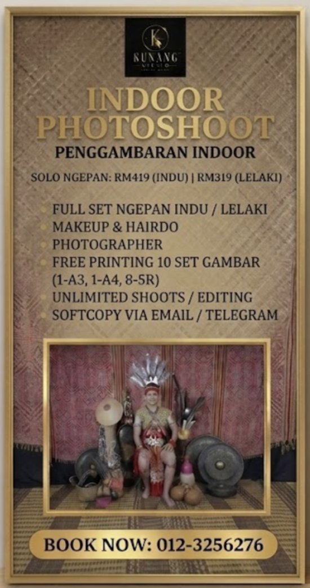

Buatan Tangan Handmade
Setiap burie, manik dan serat semula jadi disusun dengan teliti oleh tangan artisan.Every shell, bead and natural fibre is carefully arranged by artisan hands.
KUNANG STUDIO · SARAWAK
Busana Iban & Dayak buatan tangan, sulaman burie dan pengalaman budaya yang berakar daripada warisan Sarawak.Handmade Iban and Dayak attire, burie embroidery and cultural experiences rooted in Sarawakian heritage.
KRAF YANG TERUS HIDUP · LIVING CRAFT
Kunang Studio memelihara dan memodenkan seni kraf Dayak/Iban melalui busana, aksesori, anyaman, fotografi dan latihan komuniti.Kunang Studio preserves and modernises Dayak/Iban craft through attire, accessories, weaving, photography and community training.
Cerita Kami / Our Story →Setiap burie, manik dan serat semula jadi disusun dengan teliti oleh tangan artisan.Every shell, bead and natural fibre is carefully arranged by artisan hands.
Siluet kontemporari bertemu motif tradisional untuk hasil yang bermakna dan boleh digayakan.Contemporary silhouettes meet traditional motifs in meaningful, wearable creations.
Ilmu kemahiran dikongsi melalui bengkel demi kesinambungan seni budaya tempatan.Craft knowledge is shared through workshops to sustain local cultural arts.
PILIHAN KUNANG · KUNANG SELECTION

STUDIO EXPERIENCEPAKAI · ALAMI · ABADIKAN / WEAR · EXPERIENCE · REMEMBER
Alami sesi studio lengkap dengan busana Ngepan Indu atau Lelaki, persolekan, dandanan dan fotografi.Enjoy a complete studio session with Ngepan Indu or Lelaki attire, makeup, styling and photography.
SUARA PELANGGAN · CUSTOMER VOICES
Maklum balas sebenar tentang keselesaan, kemasan dan ketelitian hasil tangan.Genuine feedback on comfort, finishing and craftsmanship.
Nota: Sila padam atau kaburkan nombor telefon dan maklumat peribadi sebelum menerbitkan tangkapan skrin.
MULAKAN PERBUALAN · START A CONVERSATION
Kongsi idea, ukuran atau keperluan anda. Kami sedia membantu.Share your ideas, measurements or requirements. We are ready to help.
WhatsApp Kami / Message Us ↗